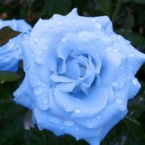

Le rose blu naturali
sono frutto della creazione di ibridi ottenuti dopo esperimenti da parte di floricoltori, specializzati in TUTTO
Le rose blu naturali sono frutto della creazione di ibridi ottenuti dopo esperimenti da parte di floricoltori, specializzati in TUTTO

prima